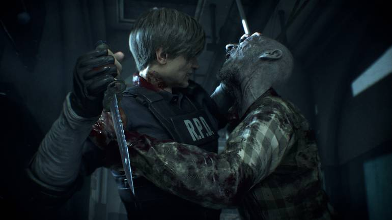
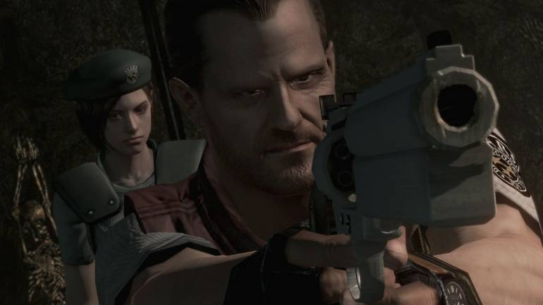

Resident Evil 4, conhecido no Japão como Biohazard 4, é um jogo eletrônico de survival horror e tiro em terceira pessoa desenvolvido e publicado pela Capcom, lançado originalmente para o Nintendo GameCube em 2005. É o sexto jogo principal da franquia Resident Evil.
Esse, provavelmente, é o Resident Evil mais assustador da série, graças aos ambientes escuros e ao gigante que fica no seu encalço. O Mr. X é um dos maiores acertos dessa nova versão e um gerador de ansiedade. Ele é um inimigo imprevisível que te segue ao longo de todo o trecho do departamento de polícia em vez de apenas alguns momentos roteirizados.
Resident Evil 4 é o jogo da série que mais arriscou, abandonando praticamente tudo o que era sagrado, pra reinventar o que a saga significava. A perspectiva da câmera e a abordagem de combate mudaram, foi introduzido um tipo de "sistema de progressão" em que você faz upgrades no inventário ao interagir com um mercador e, é evidente, em vez de Umbrella e zumbis do George Romero, você está na Espanha enfrentando aldeões zumbificados e membros de um culto sinistro.

Agora… O que é fundamental em um bom Resident Evil? Muitos diriam que é preciso ser mais do que um bom game. Tem de ser também um bom survival horror, com bom level design, bons quebra-cabeças e um bom esquema de gerenciamento de itens.Provavelmente, nenhum outro jogo da franquia faz tudo isso tão bem quanto o remake do primeiro Resident Evil.
| Nome | idade | Comentário |
|---|---|---|
| Leonardo | 19 | Adorei muito a comunidade por conta dos conteúdo. |
| João | 25 | Gostei muito dos conteúdo poderiam expandir a comunidade. |
| Maria | 30 | Poderiam criar uma comuniudade em call no discord,séria bom para discutimos sobre o jogo. |